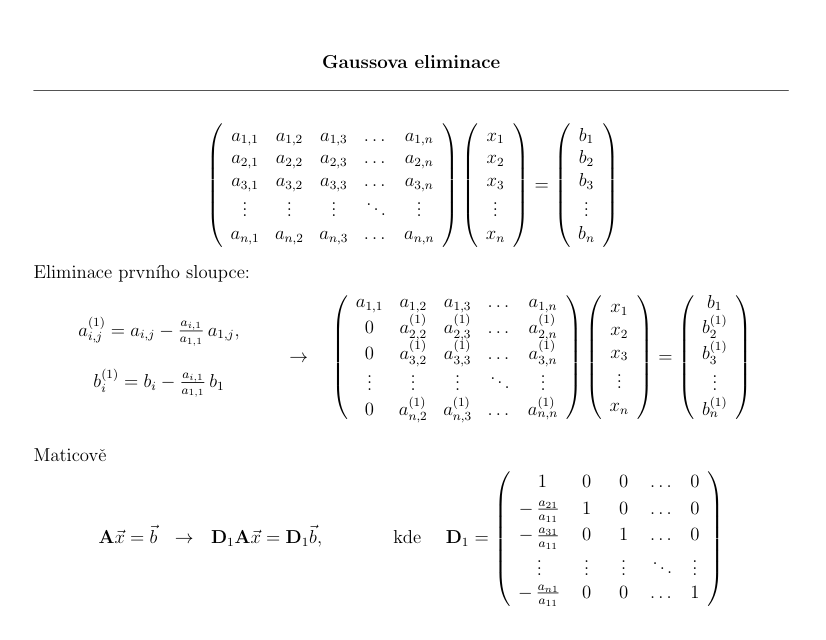
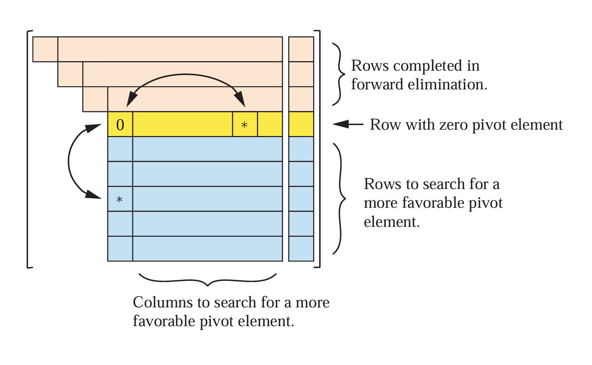
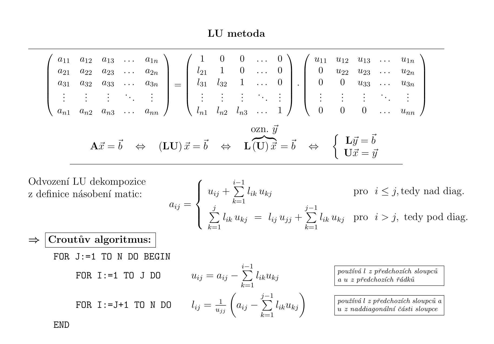

Metody lineární algebry#
import numpy as np
import scipy.linalg as la
import matplotlib.pyplot as plt
Základní operace s maticemi#
Skalární součin#
Skalární součin dvou vektorů \( \vec{x} \in \mathbb{R}^{n} \) a \( \vec{y} \in \mathbb{R}^{n} \) je definován následovně:
Napište funkci, která počítá skalární součin dvou vektorů. Nepoužijte žádné knihovní funkce (np.dot() nebo operátoru @). Zkontrolujte správnost pomocí vhodné knihovní funkce.
Pro získání rozměrů matice nebo vektoru můžete použít
x.shape,A.shape[i](velikost v i-tém směru) nebonp.shape(A)[i].Pro procházení dvou polí najednou lze použít konstrukce
for (xi,yi) in zip(x,y):.Nový vektor vytvářejte pomocí
np.zero().
x = np.random.rand(3)
y = np.random.rand(3)
print(x,y)
def skalarni_soucin(x, y):
## DOPLŇTE ##
print(skalarni_soucin(x,y), np.dot(x,y))
[0.83139346 0.13063298 0.57990023] [0.59881827 0.20268352 0.02221312]
0.5372121429785394 0.5372121429785394
Součin matice s vektorem#
Součin matice \( \mathbb{A} \in \mathbb{R}^{m \ \times \ n} \) a vektoru \( \vec{x} \in \mathbb{R}^{n} \) je definován následovně:
Napište funkci, která počítá součin matice s vektorem. Nepoužijte žádné knihovní funkce (np.dot() nebo operátoru @). Zkontrolujte správnost pomocí vhodné knihovní funkce. Lze využít předchozí funkci skalarni_soucin().
A = np.random.rand(3,4)
x = np.random.rand(4)
print(A,x)
def soucin_matice_vektor(A, x):
## DOPLŇTE ##
print(soucin_matice_vektor(A,x), np.dot(A,x))
[[0.772886 0.22015307 0.76517971 0.06616971]
[0.83894046 0.2041534 0.86375422 0.5972472 ]
[0.34786499 0.6228571 0.35128022 0.68299252]] [0.23429355 0.56975239 0.07411743 0.6347202 ]
[0.40522735 0.75597933 0.89592198] [0.40522735 0.75597933 0.89592198]
Součin matice s maticí#
Součin dvou matic \( \mathbb{A} \in \mathbb{R}^{m \ \times \ n} \) a \( \mathbb{B} \in \mathbb{R}^{n \ \times \ p} \) je definován následovně:
Napište funkci, která počítá součin dvou matic. Nepoužijte žádné knihovní funkce (np.dot() nebo operátoru @). Zkontrolujte správnost pomocí vhodné knihovní funkce.
A = np.random.rand(3,4)
B = np.random.rand(4,3)
print(A)
print(B)
def soucin_matic(A, B):
## DOPLŇTE ##
print(soucin_matic(A,B))
print(np.dot(A,B))
[[0.93900362 0.93254905 0.8398923 0.59719839]
[0.21166823 0.47156266 0.00412861 0.90073539]
[0.76013947 0.96621237 0.7792041 0.62534165]]
[[0.57859143 0.18468811 0.87793734]
[0.59642606 0.62035412 0.31216708]
[0.50617326 0.34315774 0.90202306]
[0.53664633 0.29167536 0.64022396]]
[[1.84511135 1.21433705 2.25544038]
[0.88918782 0.59576753 0.91343427]
[1.746084 1.18956922 2.07219329]]
[[1.84511135 1.21433705 2.25544038]
[0.88918782 0.59576753 0.91343427]
[1.746084 1.18956922 2.07219329]]
K snadnějšímu otestování správnosti lze použít následující funkci, která porovná výsledeky na zvolený počet míst:
try:
np.testing.assert_array_almost_equal(soucin_matic(A, B), np.dot(A, B), decimal=7)
except AssertionError as E:
print(E)
else:
print("The implementation is correct.")
The implementation is correct.
Řešení soustavy lineárních rovnic#
Hlavní úlohou lineární algebry je řešení soustavy rovnic. Tuto úlohu dokáže počítač řešit stejně jako člověk, jelikož jsou známy algoritmy s konečným počtem kroků. Stačí tedy provést konečný počet aritmetických operací s konečným počtem čísel.
Jelikož tento typ lze snadno řešit na počítači, často se jiné úlohy převádí právě na soustavu lineárních rovnic, kterou dokážeme řešit. Příkladem tohoto postupu je řešení obyčejných diferenciálních rovnic (ODR) nebo parciálních diferenciálních rovnic (PDR), se kterými se setkáme v poslední kapitole.
Matematicky můžeme problém zapsat následovně:
Metody řešící soustavu lineárních rovnic můžeme rozdělit do tří skupin:
Metody přímé - přímý běh s daným počtem kroků podle velikosti matice
Metody iterační - postupné zpřesňování výsledku
Metody optimalizační - minimalizace funkce \(|\mathbb{A}\vec{x} - \vec{b}|\) gradientími metodami (viz kapitola 8)
Přímé metody pro řešení soustavy lineárních rovnic#
Gaussova eliminace#
Gaussova eleminace je algoritmus, který transformuje libovolnou matici na horní (nebo dolní) trojúhelníkovou. To výrazně zjednodušší celou soustavu. Řešení pak lze spočítat pomocí tzv. zpětného běhu. Jednotlivé kroky celého algoritmu si zde ukážeme.
Je to vlastně zobecněný postup eliminace členů v soustavě rovnic. Podobný postup známe již ze střední - sčítání/odčítání rovnic s cílem eliminovat dostatek členů tak, abychom mohli postupně vyjádřit a spočítat jednotlivé složky řešení.

Dopředný běh
Matici \( \mathbb{A} \in \mathbb{R}^{n \ \times \ n} \) je možné transformovat na horní trojúhelníkovou pomocí vzorce:
Implementujte Gaussovu eliminaci, tedy převedení libovolné matice na horní trojúhelníkovou, pomocí uvedeného vzorce. Jaká je složitost celého algoritmu?
Dejte si pozor na nechtěné přepsání hodnoty \(a_{ji}\), která je potřeba k aktualizaci celého řádku!
A = np.random.rand(4,4)
b = np.random.rand(4)
print(A, b)
def gauss_elim_dopredna(A, b):
A = A.copy()
b = b.copy()
## DOPLŇTE ##
for i in range(A.shape[0]):
for j in range(i+1,A.shape[0]):
a = A[j,i]
for k in range(0,A.shape[1]):
A[j,k] -= a / A[i,i] * A[i,k]
b[j] -= a / A[i,i] * b[i]
return A,b
B,_ = gauss_elim_dopredna(A,b)
print(B)
[[0.9914132 0.9120253 0.93381036 0.48088198]
[0.17055387 0.71826111 0.06099502 0.55454411]
[0.53817095 0.35579706 0.89299434 0.10290006]
[0.51595647 0.43741892 0.57752847 0.79708226]] [0.32254751 0.97139026 0.59510652 0.31278152]
[[ 0.9914132 0.9120253 0.93381036 0.48088198]
[ 0. 0.56136442 -0.09964938 0.47181747]
[ 0. 0. 0.36136816 -0.04107597]
[ 0. 0. 0. 0.58775892]]
Zpětný běh
Soustava lineárních rovnic \( \mathbb{A} x = b \) s horní trojúhelníkovou maticí \( \mathbb{A} \in \mathbb{R}^{n \ \times \ n} \) je možné vyřešit pomocí zpětné substituce neboli zpětného běhu Gaussovy eliminace:
Implementujte zpětný běh Gaussovy eliminace, tedy řešení soustavy linerních rovnic s trojúhelníkovou maticí, pomocí uvedeného vzorce. Správnost ověřte pomocí knihovní funkce scipy.linalg.solve().
A = np.triu(np.random.rand(4, 4)) # vynuluje v matici cisla pod diagonalou
b = np.random.rand(4)
print(A, b)
def gauss_elim_zpetny(A,b):
## DOPLŇTE ##
x = np.zeros(A.shape[0])
for i in range(A.shape[0]-1, -1, -1):
x[i] = b[i] / A[i,i]
for j in range(i+1,A.shape[1]):
x[i] -= A[i,j]*x[j] / A[i,i]
return x
print(gauss_elim_zpetny(A, b))
print(la.solve(A, b)) # kontrola
[[0.99238736 0.91444374 0.74467695 0.67980813]
[0. 0.43783844 0.97596445 0.33957138]
[0. 0. 0.45236023 0.43979398]
[0. 0. 0. 0.91868856]] [0.84833208 0.96539183 0.43887978 0.87205561]
[-1.08706757 1.3632094 0.04732931 0.94923966]
[-1.08706757 1.3632094 0.04732931 0.94923966]
Teď již stačí jen použít obě metody na řešení libovolné soustavy linearních rovnic:
A = np.random.rand(4,4)
b = np.random.rand(4)
print(A, b)
def gauss_elimimace(A,b):
A,b = gauss_elim_dopredna(A, b)
return gauss_elim_zpetny(A, b)
try:
np.testing.assert_array_almost_equal(gauss_elimimace(A, b), np.linalg.solve(A, b), decimal=7)
except AssertionError as E:
print(E)
else:
print("The implementation is correct.")
[[0.66262611 0.29301267 0.59422536 0.07276833]
[0.14685898 0.71236235 0.5528195 0.17417942]
[0.68757098 0.47889717 0.18110509 0.628472 ]
[0.51145855 0.64432575 0.37681061 0.46435004]] [0.9254799 0.68494708 0.65224819 0.30197395]
The implementation is correct.
Pivoting
V této podkapitole si ukážeme několik numerických komplikací, které u Gaussovy eliminace můžou nastat.
Prvním zřejmým problémem je situace, kdy je přední prvek matice (pivot) rovný nule. Ten nemůžeme použít, protože bychom dělili při eliminaci spodních řádků nulou!
Použijte Gaussovu eliminaci gauss_elimimace() na řešení soustavy s maticí:
## DOPLŇTE ##
C:\Users\jiral\AppData\Local\Temp\ipykernel_20156\339819762.py:13: RuntimeWarning: divide by zero encountered in long_scalars
A[j,k] -= a / A[i,i] * A[i,k]
C:\Users\jiral\AppData\Local\Temp\ipykernel_20156\339819762.py:13: RuntimeWarning: invalid value encountered in double_scalars
A[j,k] -= a / A[i,i] * A[i,k]
---------------------------------------------------------------------------
ValueError Traceback (most recent call last)
Cell In [219], line 6
3 A = np.array([[0, 1], [1, 1]])
4 b = np.random.rand(2)
----> 6 print(gauss_elimimace(A, b))
Cell In [218], line 6, in gauss_elimimace(A, b)
5 def gauss_elimimace(A,b):
----> 6 A,b = gauss_elim_dopredna(A, b)
7 return gauss_elim_zpetny(A, b)
Cell In [216], line 13, in gauss_elim_dopredna(A, b)
11 a = A[j,i]
12 for k in range(0,A.shape[1]):
---> 13 A[j,k] -= a / A[i,i] * A[i,k]
14 b[j] -= a / A[i,i] * b[i]
15 return A,b
ValueError: cannot convert float NaN to integer
Gaussova eliminace nedokáže matici s nulovými prvky na diagonále převést na horní trojúhelníkovou.
Druhý problém nastává, pokud je pivot velmi malý. Tedy na diagonále matice se nachází velmi nízké hodnoty.
Použijte Gaussovu eliminaci gauss_elimimace() na řešení soustavy s maticí a pravou stranou:
Výsledek porovnejte s řešením získaným pomocí knihovní funkce scipy.linalg.solve().
## DOPLŇTE ##
[-0.8010025 1.30401611 -0.53601074]
[-0.801 1.304 -0.536]
Vidíme, že dostáváme výsledek s nezanedbatelnou chybou! Podobný příklad můžete vidět zde.
Chyba vzniká zaokrouhlováním při odčítání velmi odlišných čísel. Při použití malého pivota odčítáme od hodnot v matici vysoké číslo, čímž vzníká velká chyba (výrazně větší než strojová přesnost \(\varepsilon\)).
Dalším problémem je, že malé hodnoty v matici mohou vznikat odečtením blízkých hodnot v předchozích krocích. Nasledné použití této hodnoty jako pivota vede k silnému hromadění chyb!
Předchozím problémům se lze vyhnout vhodným výběrem pivota (tzv. pivotingem). Vhodný pivot je největší dostupné číslo. Máme několik strategií, jak pivota vybrat:

úplný pivoting - výběr z celé dosud neupravené části matice \(\max{|a_{jk}|}\) (nevýhoda: znatelně zpomaluje výpočet)
částečný pivoting - výběr v daném sloupci (sloupcový) a řádku (řádkový)
implicitní pivoting - rychlejší verze sloupcového pivotingu, při výběru je porovnána velikost prvků v daném sloupci normovaném na maximum z prvků v jednotlivých řádcích původní matice
Při výběru pivota z jiného řádku je třeba prohodit odpovídající řádky a pravou stranu. V případě volby pivota v jiném sloupci je třeba prohodit navíc složky hledaného řešení.
V praxi většinou stačí částečný nebo i sloupcový pivoting.
Modifikujte Gaussovu eliminační metodu pomocí tak, že použijete sloupcový pivoting. Ověřte zlepšení přesnosti na řešení předcházející soustavy rovnic. Stačí upravit zpětný chod gauss_elim_dopredna().
Pro nalezení největšího prvku se může hodit funkce np.argmax(). Pro prohození řádků lze použít np.copy() (pro uložení přepisovaného řádku do pomocné proměné) nebo pokročilého Numpy řezu A[[i,j],:] = A[[j,i],:] (prohodí řádky \(i,j\)).
A = np.array([[1e-10, 2, 3], [4, 5, 6], [7, 8, 9]])
b = np.array([1, 0.1, 0.001])
def gauss_elim_dopredna_pivoting(A, b):
A = A.copy()
b = b.copy()
## DOPLŇTE ##
def gauss_elimimace_pivoting(A,b):
A,b = gauss_elim_dopredna_pivoting(A, b)
return gauss_elim_zpetny(A, b)
print(gauss_elimimace_pivoting(A, b))
print(la.solve(A, b))
2
[[7.e+00 8.e+00 9.e+00]
[4.e+00 5.e+00 6.e+00]
[1.e-10 2.e+00 3.e+00]] [0.001 0.1 1. ]
[[7. 8. 9. ]
[0. 0.42857143 0.85714286]
[0. 2. 3. ]] [0.001 0.09942857 1. ]
2
[[7. 8. 9. ]
[0. 2. 3. ]
[0. 0.42857143 0.85714286]] [0.001 1. 0.09942857]
[[7. 8. 9. ]
[0. 2. 3. ]
[0. 0. 0.21428571]] [ 0.001 1. -0.11485714]
2
[[7. 8. 9. ]
[0. 2. 3. ]
[0. 0. 0.21428571]] [ 0.001 1. -0.11485714]
[[7. 8. 9. ]
[0. 2. 3. ]
[0. 0. 0.21428571]] [ 0.001 1. -0.11485714]
[-0.801 1.304 -0.536]
[-0.801 1.304 -0.536]
Gauss-Jordanova eliminace#
Matici \(\mathbb{A}\) převedeme na tvar, kdy jsou na hlavní diagonále samé jedničky
Touto metodou lze získat i inverzní matici \(\mathbb{A}^{-1}\)
Thomasův algoritmus#
Pro speciální typy matic existují efektivnější algoritmy, které najdou řešení ve výrazně kratším čase. Příkladem je soustava s tridiagonální maticí. Pro takovou matici nemusíme provádět celou Gaussovu eliminaci, ale jen výrazně redukovaný počet kroků (stačí eliminovat pouze vedlejší diagonály).
Systém \( \mathbb{A} \vec{x} = \vec{b} \) s tridiagonální maticí \( \mathbb{A} \) lze efektivně řešit pomocí Thomasova algoritmu. Tridiagonální matici \( \mathbb{A} \) můžeme reprezentovat pomocí tří vektorů \( \vec{p} \), \( \vec{q} \), and \( \vec{r} \) následovně:
kde \( p_{n-1} = 0 \) and \( r_0 = 0 \). Řešení \( \mathbb{A} x = b \) získáme zpětným během eliminace:
kde koeficienty \( \mu_i \) a \( \rho_i \) jsou získány při dopředném běhu:
kde \( \mu_0 = -p_0 \, / \, q_0 \), \( \rho_0 = b_0 \, / \, q_0 \) a \(\mu_{n-1}=0\).
Implementujte Thomasův algoritmus pomocí uvedených vzorců. Nejprve je třeba provést dopředný běh (výpočet \(\mu\) a \(\rho\)) a následně zpětný běh. Správnost ověřte pomocí knihovní funkce scipy.linalg.solve().
A = np.triu(np.tril(np.random.rand(5, 5), 1), -1)
b = np.random.rand(5)
print(A,b)
def thomas_alg(A,b):
## DOPLŇTE ##
print(thomas_alg(A, b))
print(la.solve(A,b))
[[0.36653253 0.01789338 0. 0. 0. ]
[0.76320804 0.75026937 0.52011663 0. 0. ]
[0. 0.5319773 0.6195286 0.7682034 0. ]
[0. 0. 0.229951 0.02978361 0.92169446]
[0. 0. 0. 0.2992984 0.80208829]] [0.10680473 0.68029879 0.03262974 0.06259222 0.90601487]
[ 0.1388284 3.12515556 -3.40378397 0.62334982 0.89696768]
[ 0.1388284 3.12515556 -3.40378397 0.62334982 0.89696768]
LU dekompozice#

LU dekompozice rozděluje matici na součin spodní a hodní trojúhelníkové matice. Lze ji spočítat pomocí Croutova algoritmu:
pro všechna \(j = 1, 2, \dots, n\).
Tento algoritmus má podobnou složitost jako Gaussova eliminace. Je výhodný v případě, kdy řešíme stejnou soustavu rovnic pro mnoho různých pravých stran. V takovém případě by se nevyplatilo provádět Gaussovu eliminaci pořád znova. Naopak, pokud matici rozložíme pomocí LU dekompozice, stačí provést dvakrát zpětný běh Gaussovy eliminace, který je pouze \(O(n^2)\) oproti Gaussově eliminaci \(O(n^3)\)! Matematicky stačí vyřešit:
Iterativního zpřesnění řešení#
Další výhodou je možnost rychlého iterativního zpřesnění řešení. Uvažujme nepřesné řešení \(\vec{x}^{\prime}\) soustavy \(\mathbb{A} \vec{x} = \vec{b}\):
Tedy počáteční nepřesné řešení \(\vec{x}_0\) můžeme nepřesné řešení iterativně zpřesňovat pomocí:
Pro velké matice (\(N > 50\)) již dochází v přímých metodách k výraznému kumulování zaokrouhlovacích chyb, jelikož počet aritmetických operací roste s \(O(N^3)\). Obzvlášť u matic blízkých singulární matici (lineární závislost řádků) je chyba významně zesilována. Proto je doporučeno využít iterativního zpřesnění, což umožní snížit chybu zpět na strojovou přesnost. Zároveň si tím nepokazíme celkovou složitost, jelikož prvotní řešení soustavy zabere \(O(N^3)\), zatímco jedna iterace zpřesnění má složitost již jen \(O(N^2)\)!
Pro singulární matice nebo blízké singulární můžou přímé, které jsme v této kapitole viděli, snadno selhat. Existují proto specializované SVD metody (Singular Value Decomposition), které si dokáží poradit s obdélníkovými maticemi a maticemi se soustavami s závislými rovnicemi.